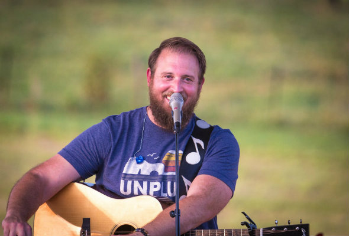
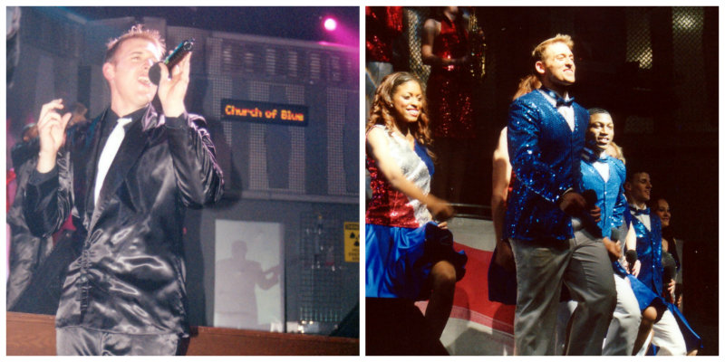

Don't worry, I'm not going to go into all the minute details of my life, but rather I'll just hit a few highlights instead.
This first section will be just a little bit about my life. The picture above is a relatively recent (Easter 2017) picture of
my family. I've been married for almost 7 years and have 2 boys that are 5 and 3. We also have a girl due in December.
I put the picture of them up at the top of this section, because they are the most important part of my life.
We live in a small town in Virginia called Ruckersville. It's about 1.5 hours south of the DC area, the same distance
west of Richmond, and just a little bit north of Charlottesville.
The greater Charlottesville area (which would include Ruckersville and a few other small towns) is the home of the University of
Virginia, and actually has a few interesting tech companies. The population of the whole area is probably just under 200,000
when all the outlying areas are factored in.
In addition to family, there are a couple of other things that I take seriously: music and strength training.
I started playing the guitar when I was 16, and have continuously played ever since. You can periodically find me playing
at local wineries and brewries in the area.
My parents tried to get me to take piano lessons when I was a kid and it didn't stick, but I was able to learn the guitar
and did stick with that even though it was hard and continues to challenge me. There's always something new to
learn or a skill area to improve.

Strength training is another thing that I've been doing for a long time, but only seriously for the last 8 months or so.
I found the Starting Strength model of training at the end of
2016 and have done it consistently since that time.
Not to get all dramatic about it or anything, but even over the course of such a short time the discipline of lifting and this
program have opened my eyes to several things that apply to all areas of my life.
Things like the importance of consistency and showing up every day, rather than trying to accomplish everything in one fell
swoop. I've increased my ability to lift heavier and heavier things by showing up at the gym consistently and increasing
the weight a little each time far more than if I lifted less consistently or tried to make bigger jumps.
I also learned the importance of having a specific method and program for lifting, that doesn't vary based on how I "feel", and trusting
the process.
Finally, one more quick story and we'll move on. Around December of last year, I started getting some pain in my knee while I was squatting.
It got to the point where it would end the squat portion of my workout because the pain was too much.
Long story short, I had to reduce my weight all the way back down to about 115 and focus on my form. It would have been easy to just stop
lifting, or switch to a different program, but I had to force myself to trust my coach and trust the process.
And it wasn't easy, because I felt silly being a bigger guy in the gym squatting small weights. But once again, it was all about trust.
Workout by workout, over the course of several months, I just focused on keeping my form right and increasing the weight by a small amount
each workout and just recently got my squat weight up to where it should be.
United States Air Force
There's so much that can be said about my time in the Air Force.
Without question I learned a lot about myself. I learned that I could acheive more, both mentally and physically than I thought possible.
I didn't grow up around any active military members, so the whole thing was pretty foreign to me when I first started. I did ROTC, and the
basic training experience that we did was a shocker to me, but also a great experience.
It was my first time going out and being an adult, living on my own, supervising people and being thrown head first into projects I didn't
really know about and had to figure out!
But ironically, there was one unlikely part of my AF experience that really stood out, and was more educational than any other.
Tops in Blue
When I tell people that part of my time in the Air Force was spent touring with a musical act, it usually blows their mind!
Suffice it to say that most people don't associate this with military service:

Yes, that blue jacket on the left is covered in sequins...
Somewhere around half of the people that have been in the Air Force know what
Tops in Blue is, and there have been mixed reivews of the value of the program, though some folks who were deployed and thier families back home
did seem to enjoy it.
And it can be a little hard to explain, but I'm going to attempt to tell you why this was one of the most formative experiences of my life,
and how it applies to learning to code with this program.
When I originally decided to audition for the program I thought it would be a lot of fun, since I was a musician and like to play guitar and sing.
Despite being repeatedly told how difficult and grueling it would be, I just assumed my love of music would overcome all that.
It wasn't until we actually started putting the show together, getting 4 hours of sleep a night that I realized it might be harder than
I expected it to be.
Then we hit the road for our 140+ shows that year and things really got crazy. We had a 53' semi full of our equipment, and when we got
to a base we would have to unload it, set up our entire stage, perform the show and then tear it al down and put it back in the truck
and move on to the next base.
Sometimes we got a couple of hours of sleep on the bus, occassionally we went for 1-2 days without getting any sleep and still had to
do all the work.
Sometimes we were in places like Kuwait, Iraq, or Afghanistan and the temperature would soar well over 100 degrees. We still did the shows.
But that experience showed me that I was physically capable of more than I thought. It also showed me exactly who I was under tremendous amounts
of pressure. I also learned a lot about how other people change under less than ideal circumstances and the dynamics of working as a team.
All those things are extremely useful day to day and working with others, but I mentioned that the experience was also directly relevent to
this program. And here's how:
Jerome told me in the intial interview how hard coding is. Spending 18 hours looking for that one wrong semicolon. Yet, there are lots of us that say we want
to do this anyway. But we still don't know exactly what we're getting ourselves into.
I actually have direct experience doing something that I thought would be easy because I liked it or was interested in it, only to discover that there
were parts of it that were terrbily hard. But I still did it, and completed the experience like I said I would.
There were people who didn't finish the year long tour for various reasons, despite the fact that they loved music.
So while I can't know exactly what I'm getting myself in for with the Vets Who Code program, and the lifestyle of a coder, I do have a real
life experience to fall back on and know what I can accomplish, even when it would be way easier to quit.
After my Tops in Blue experience, I went back to my career field for another couple of years and got out of the Air Force in 2007 as a captain.